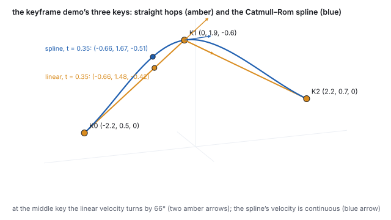
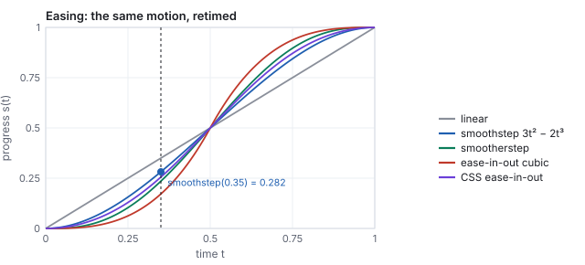
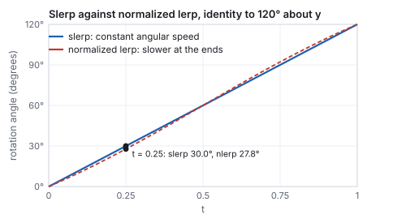
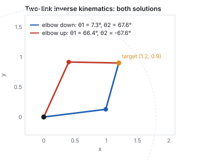
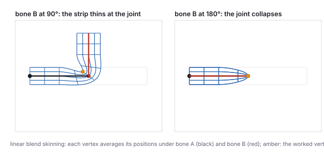
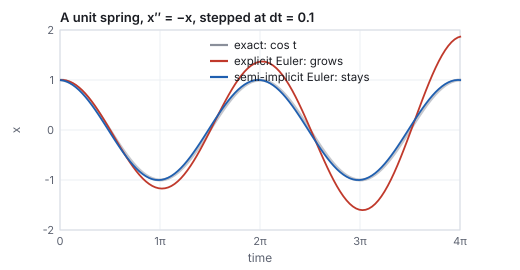

This chapter links to the course’s interactive demos and uses MathJax for its
formulas. Read it through the course website (or download the file and open it in a
browser); a Canvas inline preview will reach neither the demos nor the math.
All chapters.
Animation and Interpolation: Keyframes, Easing, Rotations, Skinning
CSS 551 · Advanced 3D Computer Graphics · course text
Course text · how a scene moves: keyframes and the curves between them, retiming with easing, interpolating rotations correctly, blending transforms without shrinking, forward and inverse kinematics on a chain, skinning a mesh to a skeleton, and stepping a simulation. Not tied to a lecture; pairs with the keyframe demo and the scene-graph chapter.
Everything earlier in the text places, views, builds, dresses and lights a scene at one instant. Animation is the function from time to all of that: positions, orientations, joint angles, vertex positions. Nobody authors that function frame by frame. An animator sets a few keyframes and the computer interpolates, and the whole subject is the question of what to interpolate and how. Positions interpolate along a curve, and the choice between straight hops and a spline is worked on the keyframe demo’s three keys. Time itself is interpolated by an easing function. Rotations must not be interpolated as matrices or Euler angles, and the chapter shows what goes wrong (a shrinking matrix, a collapsed joint) and works the quaternion slerp that fixes it. A skeleton is the scene-graph chain of the scene-graphs chapter driven by angles, solved forward and, for one two-link arm, inverse. Skinning attaches a mesh to it with the blend that produces the classic collapsing elbow. The chapter ends with the simplest simulation, a spring stepped three ways, to show why the order of two lines of code decides whether the motion stays bounded.
Definition (keyframe, in-betweening)
A keyframe is a value of some animated quantity at a stated time: a position, an angle, a color.
In-betweening (interpolation) produces the value at every other time from the keyframes on either
side. The curve through the keyframes as a function of time is the animation curve; every
animated property in a scene has one.
The keyframe demo has three keys, \(\mathbf{K}_0 = (-2.2, 0.5, 0)\), \(\mathbf{K}_1 = (0, 1.9, -0.6)\),
\(\mathbf{K}_2 = (2.2, 0.7, 0)\), at times \(0, \tfrac12, 1\), and one parameter \(t\). Its two modes
are the two simplest answers to the question of what lies between.

The demo’s keys, its two paths, and the two positions at \(t = 0.35\). The velocity of the linear path turns by \(66^\circ\) at the middle key; the spline’s velocity passes through continuously.
Worked example (linear in-betweening)
At \(t = 0.35\) the point is on the first segment, \(0.35 \times 2 = 0.7\) of the way from
\(\mathbf{K}_0\) to \(\mathbf{K}_1\):
\(\mathbf{K}_0 + 0.7\,(\mathbf{K}_1 - \mathbf{K}_0) = (-2.2 + 1.54,\; 0.5 + 0.98,\; -0.42) = (-0.66, 1.48, -0.42)\).
The velocity on the first segment is \(2(\mathbf{K}_1 - \mathbf{K}_0) = (4.4, 2.8, -1.2)\) per unit \(t\)
and on the second \(2(\mathbf{K}_2 - \mathbf{K}_1) = (4.4, -2.4, 1.2)\); at \(t = \tfrac12\) the direction
changes by \(66^\circ\) instantly. On screen the object turns a corner, and the eye reads the corner
as a jerk even though the position is continuous.
Worked example (the demo’s spline)
The smooth mode is a Catmull–Rom spline, the Hermite chain of
the curves chapter with tangents
\(\mathbf{m}_i = \tfrac12(\mathbf{K}_{i+1} - \mathbf{K}_{i-1})\). At an open end there is no neighbor, and
the library reflects one: \(\mathbf{p}_{-1} = 2\mathbf{K}_0 - \mathbf{K}_1 = (-4.4, -0.9, 0.6)\). The first
piece then runs from \(\mathbf{K}_0\) to \(\mathbf{K}_1\) with
\(\mathbf{m}_0 = \tfrac12(\mathbf{K}_1 - \mathbf{p}_{-1}) = \mathbf{K}_1 - \mathbf{K}_0 = (2.2, 1.4, -0.6)\) and
\(\mathbf{m}_1 = \tfrac12(\mathbf{K}_2 - \mathbf{K}_0) = (2.2, 0.1, 0)\). At \(t = 0.35\) the local parameter
is \(s = 0.7\), and the four Hermite weights are
\(h_{00} = 0.216\), \(h_{10} = 0.063\), \(h_{01} = 0.784\), \(h_{11} = -0.147\), so
\[
\mathbf{c}(0.35) = 0.216\,\mathbf{K}_0 + 0.063\,\mathbf{m}_0 + 0.784\,\mathbf{K}_1 - 0.147\,\mathbf{m}_1 = (-0.66,\; 1.671,\; -0.508),
\]
the demo’s smooth-mode readout. The \(x\) coordinate agrees with the linear path (the keys are
evenly spaced in \(x\)); the spline is \(0.19\) higher and \(0.09\) farther back, bulging outward past
the chord as it rounds the corner. At \(t = \tfrac12\) it passes through \(\mathbf{K}_1\) exactly, with
velocity \(2\mathbf{m}_1 = (4.4, 0.2, 0)\) per unit \(t\) on both sides.
See it liveThree keyframes, two
in-betweenings: scrub \(t\) across the middle key in linear mode and watch the direction snap;
switch to smooth and scrub again. The readout is the position of this section.
A production animation curve is usually a chain of cubic pieces with editable tangents at each key
(the Bézier handles of a curve editor), with Catmull–Rom as the default that needs no
handles. Positions, colors and any other vector quantity interpolate this way. Two kinds of quantity
do not: time itself, which is retimed by easing, and rotations, which are the subject of Section 3.
2 · Timing: easing
A path fixes where; a second function fixes when. Real things accelerate from rest and decelerate to
a stop, and an object that starts at full speed looks pushed. An easing function
\(s(t)\) maps normalized time to normalized progress, and the position at time \(t\) is the path
evaluated at \(s(t)\): the same path, retimed. Disney’s animators named this principle
slow in and slow out.

Five easing curves. All agree at the ends and the middle; they differ in how hard they slow at the ends, which is how sharply the object appears to start and stop.
Worked example (smoothstep at \(t = 0.35\))
\(s(t) = 3t^2 - 2t^3\): \(t^2 = 0.1225\), \(t^3 = 0.042875\), \(s = 0.3675 - 0.08575 = 0.282\). The object is
\(28.2\,\%\) along its path when \(35\,\%\) of the time has passed; on the linear path that is
\((-0.96, 1.29, -0.34)\) instead of \((-0.66, 1.48, -0.42)\). The other curves at the same time:
smootherstep \(6t^5 - 15t^4 + 10t^3 = 0.235\), the cubic ease-in-out \(4t^3 = 0.171\), and the CSS
ease-in-out Bézier \(0.256\). Smoothstep has zero velocity at both ends and unit
slope \(1.5\) at the middle; smootherstep also has zero acceleration at the ends.
The CSS curve is a two-dimensional Bézier \((0,0), (0.42, 0), (0.58, 1), (1, 1)\) read as
\(s\) against \(t\), which needs a root-find to evaluate at a given \(t\); it is the form of the
curve editor’s handles applied to time. Easing composes with everything else in the chapter: a
rotation slerped at \(s(t)\), a joint angle keyed at \(s(t)\).
3 · Interpolating rotations
Interpolating a rotation matrix entry by entry does not give a rotation. Halfway between the identity
and \(R_y(90^\circ)\), entry by entry, is
\(\tfrac12\bigl(I + R_y(90^\circ)\bigr)\), whose \(xz\) block is
\(\begin{pmatrix} 0.5 & 0.5 \\ -0.5 & 0.5 \end{pmatrix}\): a rotation by \(45^\circ\) times a scale of
\(0.707\), with determinant \(0.5\). An object interpolated that way shrinks by 29 % at the midpoint
and recovers. Halfway between the identity and a \(180^\circ\) rotation the matrix is zero and the
object vanishes. Interpolating Euler angles keeps the rotation valid but not the path: with three
angles changing at once the object swings along a curve that depends on the axis order, and near
gimbal lock it spins.
Definition (slerp)
For unit quaternions \(q_1, q_2\) with \(\cos\Omega = q_1\cdot q_2\),
\[
\mathrm{slerp}(q_1, q_2, t) = \frac{\sin\bigl((1-t)\Omega\bigr)}{\sin\Omega}\,q_1 + \frac{\sin(t\Omega)}{\sin\Omega}\,q_2,
\]
the great-circle arc between them on the unit sphere of quaternions, traversed at constant angular
speed. Every intermediate value is a unit quaternion, hence a rotation. If \(q_1\cdot q_2 < 0\), replace
\(q_2\) by \(-q_2\) (the same rotation) first, so the arc is the short one.
Worked example (slerp against the shortcut)
The rotation chapter’s pair: \(q_1 = (0, 0, 0, 1)\), the identity, and
\(q_2 = (0, 0.866, 0, 0.5)\), \(120^\circ\) about \(y\). Their dot is \(0.5\), so \(\Omega = 60^\circ\)
(half the rotation angle, as always for quaternions). At \(t = 0.25\) the weights are
\(\sin 45^\circ / \sin 60^\circ = 0.8165\) and \(\sin 15^\circ / \sin 60^\circ = 0.2989\), and
\(\mathrm{slerp} = (0, 0.2588, 0, 0.9659)\): since \(\cos 15^\circ = 0.9659\), that is a rotation of
\(30^\circ\) about \(y\), a quarter of the way as it should be. At \(t = 0.5\) it is \((0, 0.5, 0, 0.866)\),
\(60^\circ\). The cheap alternative, normalized lerp, blends the components and renormalizes:
at \(t = 0.25\), \(0.75\,q_1 + 0.25\,q_2 = (0, 0.2165, 0, 0.875)\), normalized \((0, 0.2402, 0, 0.9707)\),
a rotation of \(27.8^\circ\) instead of \(30^\circ\). It follows the same arc but not at constant speed:
slower near the ends, up to 10 % faster in the middle for this \(120^\circ\) arc, and the discrepancy
grows with the arc. Had we used \(-q_2 = (0, -0.866, 0, -0.5)\), the dot would be \(-0.5\),
\(\Omega = 120^\circ\), and the interpolation would swing \(240^\circ\) the other way around to reach
the same orientation.

Angle reached against \(t\) for the two interpolations. Slerp is linear in angle; normalized lerp is not, though it stays within a few degrees on an arc this size.
Games often use normalized lerp anyway, because it needs no trigonometry and its speed error is
invisible over the small arcs between consecutive keyframes; slerp is the reference. Interpolating
through several orientation keys uses the quaternion analog of the Catmull–Rom spline (squad), or
simply slerps between consecutive keys with easing on \(t\).
4 · Interpolating transforms
A node’s local transform in the scene-graph chain is the
TRS product of the affine chapter, and the rule for animating
it follows from Section 3: never interpolate the matrix. Interpolate the three parts separately,
translation and scale by a curve, rotation by slerp, and rebuild \(T\,R\,S\) at each frame. An
animation file (glTF, FBX) stores exactly those three channels per node, each with its own keyframes
and interpolation mode, and the matrix is never stored at all. A matrix that must be interpolated
(from a tool that only exported matrices) is first decomposed into TRS, which is the read-back of the
affine chapter and which fails, as noted there, if the matrix has shear.
The same rule applies to a camera: interpolate the eye position and the look-at target, or the
eye and a quaternion, and rebuild the view matrix; and to a dolly, where the field of view is one
more scalar channel. Everything that is a matrix is rebuilt from things that are not.
5 · Skeletons: forward and inverse kinematics
A character’s skeleton is a scene graph whose nodes are joints and whose local transforms are
rotations about those joints; the arm of the scene-graph chapter, base, arm and hand, is a
three-joint skeleton. Forward kinematics is the composite rule: set the joint angles, multiply
down the chain, and the hand lands where it lands. Keyframing the angles and interpolating them with
slerp is how most character animation is authored.
Inverse kinematics asks the other question: where must the joints be for the hand to reach a
given point? For a chain of many joints the answer is not unique and is found numerically (cyclic
coordinate descent, or a Jacobian pseudo-inverse iterated toward the target). For two links in a
plane it is a triangle, and the law of cosines solves it.
Two-link planar IK
Links of lengths \(l_1, l_2\) from the origin to a target \(\mathbf{p}\) at distance \(d = |\mathbf{p}|\),
reachable when \(|l_1 - l_2| \le d \le l_1 + l_2\):
\[
\cos\theta_2 = \frac{d^2 - l_1^2 - l_2^2}{2\,l_1 l_2}, \qquad
\theta_1 = \mathrm{atan2}(p_y, p_x) - \mathrm{atan2}\bigl(l_2\sin\theta_2,\; l_1 + l_2\cos\theta_2\bigr),
\]
with \(\theta_2\) the elbow bend and \(\theta_1\) the shoulder angle. The two signs of \(\theta_2\) give
the elbow-down and elbow-up solutions.

Both solutions of the worked example, and the reach circle at \(l_1 + l_2 = 1.8\).
Worked example (reaching a point)
\(l_1 = 1\), \(l_2 = 0.8\), target \((1.2, 0.9)\), \(d = 1.5\). Then
\(\cos\theta_2 = (2.25 - 1 - 0.64)/1.6 = 0.381\), \(\theta_2 = 67.6^\circ\). The target direction is
\(\mathrm{atan2}(0.9, 1.2) = 36.87^\circ\); the correction is
\(\mathrm{atan2}(0.8\sin67.6^\circ,\; 1 + 0.8\cos67.6^\circ) = \mathrm{atan2}(0.740, 1.305) = 29.54^\circ\);
so \(\theta_1 = 7.3^\circ\). Check by forward kinematics: the elbow is at
\((\cos7.3^\circ, \sin7.3^\circ) = (0.992, 0.128)\), and the hand at
\((0.992 + 0.8\cos74.9^\circ,\; 0.128 + 0.8\sin74.9^\circ) = (1.2, 0.9)\). With \(\theta_2 = -67.6^\circ\)
the shoulder is \(66.4^\circ\), the elbow at \((0.40, 0.92)\), and the hand at the same target. A
target at \((2, 0.5)\) has \(d = 2.06 > 1.8\): unreachable, and a solver clamps the arm to point at it
fully extended.
Which solution an animator wants is a constraint the solver cannot know (a human elbow bends one
way); real IK systems take a preferred bend direction, joint limits, and a pole target that fixes the
plane of the elbow. IK is what keeps feet planted on uneven ground and hands on door handles while the
rest of the body is keyframed.
6 · Skinning
A skeleton moves; a mesh must follow it. Attaching each vertex rigidly to one bone tears the mesh at
every joint, so vertices near a joint are attached to several bones with weights, and their position
is the blend of where each bone would carry them.
Definition (linear blend skinning)
For a vertex \(\mathbf{v}\) in the rest pose, bones \(i\) with rest-pose world matrices \(B_i\) and
current world matrices \(M_i\), and weights \(w_i\) summing to 1,
\[
\mathbf{v}' = \sum_i w_i\, M_i\, B_i^{-1}\, \mathbf{v}.
\]
\(B_i^{-1}\mathbf{v}\) expresses the vertex in bone \(i\)’s rest frame, \(M_i\) carries that frame
to its current pose, and the weights blend the candidates. Weights are painted per vertex, typically
over at most four bones, and the GPU evaluates the sum in the vertex shader.

A strip with weights ramping from bone A to bone B across the middle. At \(90^\circ\) the outer corner thins; at \(180^\circ\) the blend of the two bone matrices is zero and the joint collapses. This is the candy-wrapper artifact.
Worked example (one blended vertex)
Bone A is the identity; bone B pivots at \((2, 0)\) and rotates by \(\theta\). The vertex \((2, 0.4)\) on
the strip’s top edge above the pivot has weights \(\tfrac12, \tfrac12\). Under bone B at
\(\theta = 90^\circ\) it goes to \((2, 0) + R_{90}(0, 0.4) = (2, 0) + (-0.4, 0) = (1.6, 0)\); under bone A it
stays at \((2, 0.4)\); the blend is \(\tfrac12(2, 0.4) + \tfrac12(1.6, 0) = (1.8, 0.2)\), at distance
\(0.283\) from the pivot instead of \(0.4\). The strip is 29 % thinner there, the same \(0.707\) as the
matrix midpoint of Section 3, because that is what it is: the vertex sees the blended matrix
\(\tfrac12(I + R_{90})\). At \(\theta = 180^\circ\) bone B sends the vertex to \((2, -0.4)\) and the blend is
\((2, 0)\), the pivot itself, for every vertex on that cross-section.
The fix is the fix of Section 3: blend rotations as rotations. Dual quaternion skinning
(Kavan and others, 2007) represents each bone’s rigid transform as a dual quaternion, blends
those, and normalizes; the joint keeps its volume and twists cleanly. Linear blending survives because
it is cheaper and because a well-placed extra bone hides most of the damage. Facial animation uses a
different mechanism, blend shapes: whole-mesh vertex offsets keyed by weights, which is the same
weighted-sum formula applied to positions rather than matrices.
7 · Simulation: stepping a spring
Not everything is keyed. Cloth, hair, water, debris and ragdolls are simulated: a state, a force law,
and a rule for advancing the state by one frame’s \(\Delta t\). The simplest case already shows
the one decision that matters. A unit mass on a unit spring obeys \(x'' = -x\); from \(x = 1\) at rest
the exact motion is \(x = \cos t\), forever.
Worked example (two integrators, \(\Delta t = 0.1\))Explicit Euler updates position with the old velocity and velocity with the old position:
\(x_{n+1} = x_n + \Delta t\, v_n\), \(v_{n+1} = v_n - \Delta t\, x_n\). Two steps: \(x_1 = 1\),
\(v_1 = -0.1\); \(x_2 = 0.99\), \(v_2 = -0.2\). Semi-implicit Euler updates velocity first and
uses the new velocity for the position: \(v_1 = -0.1\), \(x_1 = 0.99\); \(v_2 = -0.199\),
\(x_2 = 0.9701\). After two periods (126 steps) the exact position is \(0.9994\); semi-implicit Euler
gives \(0.9973\); explicit Euler gives \(1.872\). Each explicit step multiplies the amplitude by
\(\sqrt{1 + \Delta t^2}\), so after \(n\) steps it has grown by \((1.01)^{63} = 1.87\): the spring gains
energy every step and the simulation explodes.

The same spring stepped two ways. The two integrators differ only in which velocity the position update reads.
Semi-implicit Euler is symplectic: it conserves a slightly perturbed energy exactly, so the
oscillation neither grows nor decays over any number of steps, which is why every game physics
engine uses it or its relative, Verlet integration. Stiffer systems (a cloth’s springs) need
implicit methods or smaller steps; a frame’s \(\Delta t\) is usually split into several fixed
substeps so the simulation does not depend on the frame rate. The general lesson is the same as for
keyframes: the values between the frames are produced by a rule, and the rule is a choice with visible
consequences.
Papers
J. Lasseter, “Principles of Traditional Animation Applied to 3D Computer Animation,” SIGGRAPH
1987. K. Shoemake, “Animating Rotation with Quaternion Curves,” SIGGRAPH 1985 (slerp).
N. Magnenat-Thalmann, R. Laperrière and D. Thalmann, “Joint-Dependent Local Deformations for Hand
Animation and Object Grasping,” Graphics Interface 1988 (skinning). L. Kavan, S. Collins, J.
Žára and C. O’Sullivan, “Skinning with Dual Quaternions,” I3D 2007. D. Baraff and A.
Witkin, “Large Steps in Cloth Simulation,” SIGGRAPH 1998 (implicit integration).
8 · Exercises
Exercise 1 (in-betweening)
Where is the linear path of Section 1 at \(t = 0.8\)? And with smoothstep easing applied first?
Solution
\(0.8 \times 2 = 1.6\): segment 1 at \(0.6\): \(\mathbf{K}_1 + 0.6(\mathbf{K}_2 - \mathbf{K}_1) = (1.32, 1.18, -0.24)\). Smoothstep\((0.8) = 3(0.64) - 2(0.512) = 0.896\), so \(s \times 2 = 1.792\), segment 1 at \(0.792\): \((1.742, 0.950, -0.125)\), farther along because easing is ahead of linear time in the second half.
Exercise 2 (the spline’s end)
Compute the demo spline’s tangent at \(\mathbf{K}_2\) and its position at \(t = 0.9\).
Solution
The reflected point is \(\mathbf{p}_3 = 2\mathbf{K}_2 - \mathbf{K}_1 = (4.4, -0.5, 0.6)\), so \(\mathbf{m}_2 = \tfrac12(\mathbf{p}_3 - \mathbf{K}_1) = \mathbf{K}_2 - \mathbf{K}_1 = (2.2, -1.2, 0.6)\). At \(t = 0.9\), \(s = 0.8\): \(h_{00} = 0.104\), \(h_{10} = 0.032\), \(h_{01} = 0.896\), \(h_{11} = -0.128\), with \(\mathbf{m}_1 = (2.2, 0.1, 0)\): \(0.104\,\mathbf{K}_1 + 0.032\,\mathbf{m}_1 + 0.896\,\mathbf{K}_2 - 0.128\,\mathbf{m}_2 = (1.76, 0.98, -0.14)\).
Exercise 3 (slerp)
Slerp from the identity to a \(90^\circ\) rotation about \(x\) at \(t = \tfrac13\). What rotation is it?
Solution
\(q_2 = (\sin45^\circ, 0, 0, \cos45^\circ) = (0.7071, 0, 0, 0.7071)\), \(\Omega = 45^\circ\). Weights \(\sin30^\circ/\sin45^\circ = 0.7071\) and \(\sin15^\circ/\sin45^\circ = 0.366\): \(q = (0.2588, 0, 0, 0.7071 + 0.2588) = (0.2588, 0, 0, 0.9659)\), which is \(2\arccos 0.9659 = 30^\circ\) about \(x\), a third of the way.
Exercise 4 (IK)
With \(l_1 = 1\), \(l_2 = 0.8\), solve for the target \((1.8, 0)\) and for \((0.2, 0)\).
Solution
\((1.8, 0)\): \(d = 1.8 = l_1 + l_2\), \(\cos\theta_2 = (3.24 - 1.64)/1.6 = 1\), \(\theta_2 = 0\), \(\theta_1 = 0\): fully extended along \(x\), one solution. \((0.2, 0)\): \(d = 0.2 = l_1 - l_2\), \(\cos\theta_2 = (0.04 - 1.64)/1.6 = -1\), \(\theta_2 = 180^\circ\): folded back on itself, \(\theta_1 = 0 - \mathrm{atan2}(0, 0.2) = 0\). Both are the boundary of the reachable annulus, where the two solutions coincide.
Exercise 5 (skinning)
A vertex with weights \(0.75\) on bone A and \(0.25\) on bone B, at \((2.5, 0.4)\), with bone B as in Section 6 at \(90^\circ\). Where does it go?
Solution
Under B: \((2, 0) + R_{90}(0.5, 0.4) = (2, 0) + (-0.4, 0.5) = (1.6, 0.5)\). Blend: \(0.75(2.5, 0.4) + 0.25(1.6, 0.5) = (2.275, 0.425)\). It moves a quarter of the way toward its bone-B position; the strip’s bend is spread over the weight ramp.
Exercise 6 (integration)
Run three steps of semi-implicit Euler on the spring with \(\Delta t = 0.5\), and compare with \(\cos 1.5 = 0.0707\).
Solution
\(v_1 = -0.5\), \(x_1 = 0.75\); \(v_2 = -0.875\), \(x_2 = 0.3125\); \(v_3 = -1.031\), \(x_3 = -0.203\). Off by \(0.27\) after three coarse steps, but bounded: run it for a thousand steps and it still oscillates with amplitude near 1. Explicit Euler at this step size grows by \(\sqrt{1.25} = 1.118\) per step and reaches \(x \approx 10^{48}\).